实验报告封面
课程名称： Web应用项目实训 课程代码： CW3104
任课老师： 包玉琳 实验指导老师: 包玉琳
实验报告名称： 实验4 安全管理
本实验报告包括以下几个内容： 一、实验目的 □ 二、实验环境 □ 三、实验准备 □ 四、实验过程 □ |
|---|
学生姓名：
学号：
教学班：
递交日期：
签收人：
我申明，本报告内的实验已按要求完成，报告完全是由我个人完成，并没有抄袭行为。我已经保留了这份实验报告的副本。
申明人(签名):
实验报告评语与评分：
评阅老师签名：
一、实验目的
能够说明认证与授权的区别，能区分 401 与 403 的语义、触发场景与对应的处理组件。
能够说明 JWT 的三段结构，理解「令牌载荷只放用户 ID、完整用户信息存入 Redis」这一设计的理由。
能够按步骤完成 Spring Security 认证链的搭建：引入依赖、配置 Redis 序列化、改造 JWT 工具类、编写用户详情服务与用户详情模型、编写安全配置类、实现登录接口、实现 JWT 认证过滤器、实现退出登录。
能够设计菜单表与角色菜单关联表，用一张菜单表承载目录、菜单、按钮三类数据，并遵循「模块:操作」的权限标识命名规范。
能够使用两次遍历加映射表的方式构建菜单树，并说明为什么不用递归实现。
能够实现角色列表携带菜单信息，以及角色菜单授权（先删后插、事务保护、父级目录补全）。
能够实现认证异常处理器与无权限异常处理器，完成 401 与 403 的分流返回。
能够实现权限判断服务与自定义权限管理器，完成路径级与方法级两层授权。
能够按验证清单独立完成认证与授权功能的自测。
二、实验环境
操作系统：Windows 11
开发工具：IntelliJ IDEA 2025.1.2
JDK 版本：JDK 17（本机实际以 JDK 21 运行，向下兼容）
构建工具：Maven 3.9.12
版本管理：Git + Gitee 远程仓库
数据库：MySQL 8.0
缓存数据库：Redis 5.0.10（Windows 版，本次实验新增）
数据库客户端：Navicat Premium 17；缓存客户端：redis-cli
接口测试工具：Apifox（本机未安装，使用系统自带 curl 完成等效验证）
核心依赖：Spring Boot 2.7.14、Spring Security 5.7.10、Spring Data Redis、MyBatis-Plus 3.5.3.1、Druid、MySQL Driver、Hutool 5.8.25、fastjson 1.2.83、Lombok
三、实验准备
课设项目「广软广播站点歌与投稿系统」为单模块 Spring Boot 工程，能够正常编译、启动（端口 8089，context-path 为 /api）。
已创建数据库 broadcast_db，并完成业务表与初始数据的导入，学生、广播站成员等账号均已存在。
已安装 Redis 5.0.10 并启动服务（默认端口 6379），能够使用 redis-cli 查看键与值。
已在工程 pom.xml 中引入 Spring Security、Spring Data Redis、fastjson、Hutool 等依赖。
已配置 Git 全局用户名与邮箱，能够在项目根目录提交代码（提交操作自行完成）。
已能使用 curl 发送带请求头的 HTTP 请求，并能查看响应状态码与响应体。
四、实验过程
任务一：搭建认证链（Spring Security + JWT）
步骤1：引入依赖
按下表把依赖加入本工程 pom.xml；Spring Boot 启动器与 Redis 启动器版本由 Spring Boot 父工程统一管理，Hutool、fastjson 写明版本号。
组件 | 用途 | 放置模块 |
|---|---|---|
Spring Security 启动器 | 提供过滤器链、认证与授权能力 | 本工程 |
Redis 启动器 | 存储登录用户的完整信息 | 本工程 |
fastjson | 把缓存对象序列化为可读的 JSON | 本工程 |
Hutool（JWT） | 签发与校验 JWT 令牌 | 本工程 |
截图：
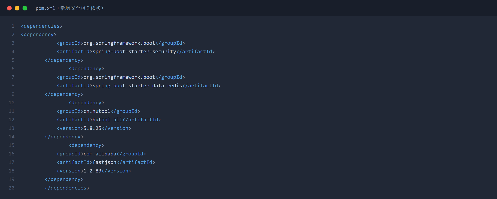
图1 pom.xml 中新增的安全相关依赖
步骤2：配置Redis序列化
新建Redis配置类，注册一个名为redisTemplate的 Bean，按四项要求设置：键用字符串序列化器、值用 JSON 序列化器、序列化时写入类型信息、开启可信包白名单。
再新建一个缓存操作工具类，对外提供四类方法：按键写入并设置过期时间、按键读取、按键删除、为已存在的键续期。
易错点：自定义的模板必须注册成名为 redisTemplate 的 Bean，否则注入点拿到的仍是框架默认模板，序列化配置形同虚设。键名建议统一使用固定前缀加用户 ID 的形式，例如 login:user:1。
截图：（Redis客户端中查看到的缓存键与JSON 值）
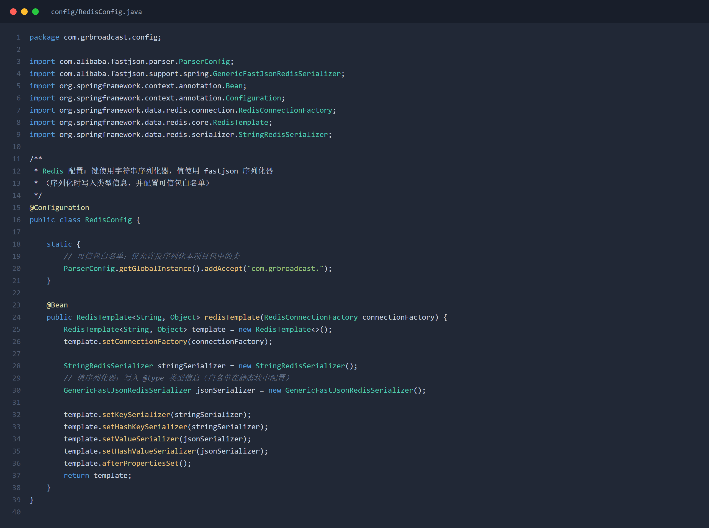
图2 RedisConfig 序列化配置
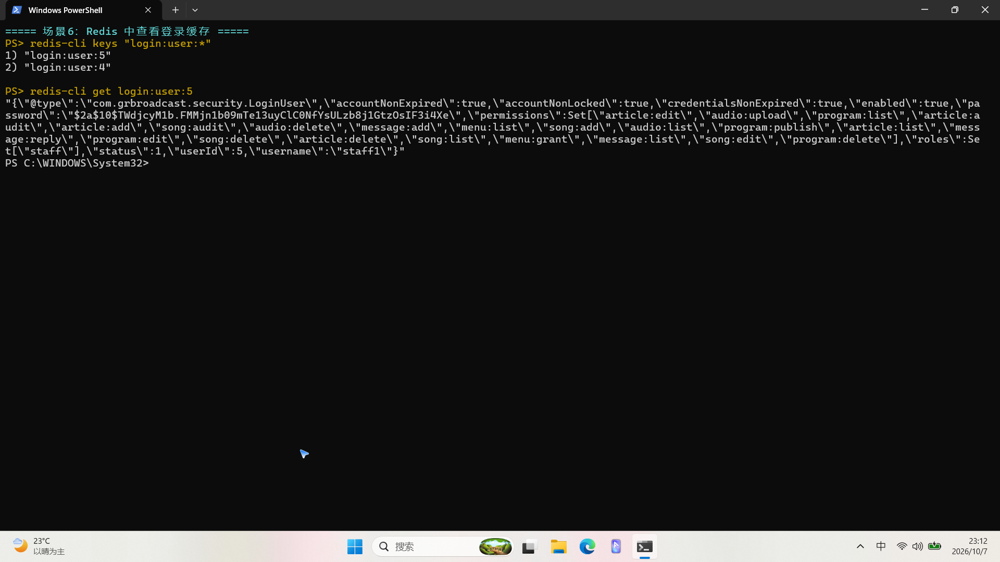
图3 redis-cli 中查看到的缓存键与 JSON 值
步骤3：改造JWT工具类
工具类对外明确四项能力：签发令牌、校验令牌、从令牌中解析用户 ID、读取令牌有效期秒数。
按下表调整令牌载荷内容，改造后载荷只保留三项：用户ID、签发时间、过期时间。
注意：令牌载荷只做 Base64 编码，任何人都能解开查看，因此绝对不能放密码、手机号等隐私数据。
截图：（解开一枚令牌，展示载荷内容确实只有用户 ID 与时间信息）
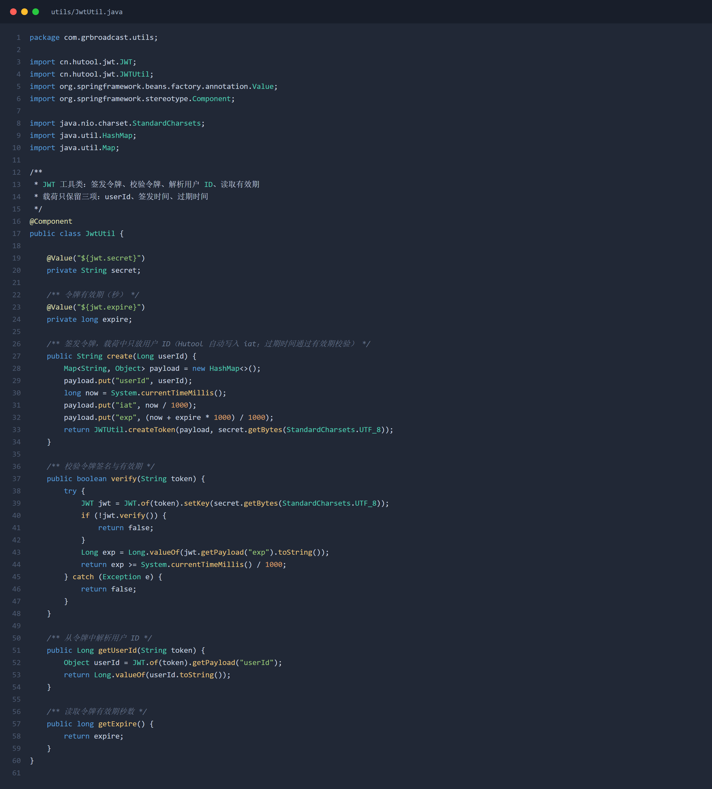
图4 JwtUtil 工具类
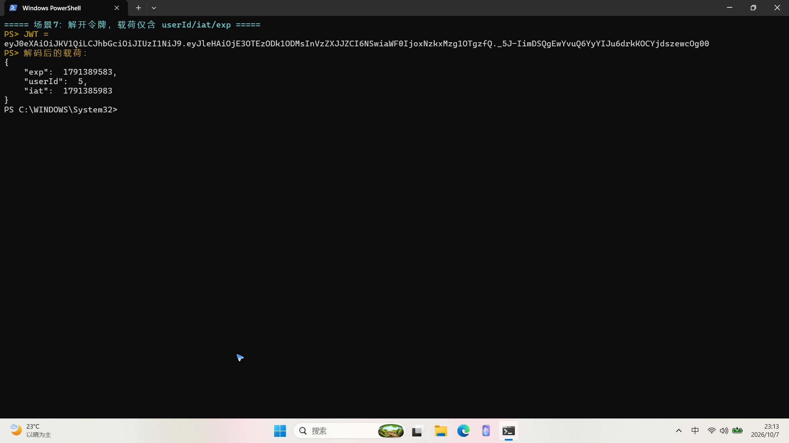
图5 解开令牌后载荷仅含 userId、iat、exp
步骤4：编写用户详情服务与用户详情模型
用户详情服务实现 UserDetailsService 接口，重写 loadUserByUsername 方法，按六步完成：按登录账号查询用户（过滤逻辑删除的数据）、判断账号是否存在、判断账号是否被禁用、查询该用户的角色编码集合、判断是否为超级管理员（是则权限集合直接放入通配符，否则按用户 ID 查询权限标识集合）、装配成用户详情对象返回。
用户详情模型实现 UserDetails 接口，至少包含六个部分：用户 ID、登录账号、密码、账号状态、角色编码集合、权限标识集合。
两个必须注意的点：第一，权限为空时要返回空集合而不是空对象，避免后续比对时层层判空；第二，这个类作为缓存对象必须提供无参构造方法，反序列化时会先创建空对象再逐字段赋值。
说明：本系统角色固定为学生 student、广播站成员 staff、指导老师 teacher 三类，不设管理员账号，代码中保留超级管理员通配符分支；测试账号 staff1、student1，密码均为 123456，密码以 BCrypt 密文存储。
截图：（用户详情服务与用户详情模型的核心代码）
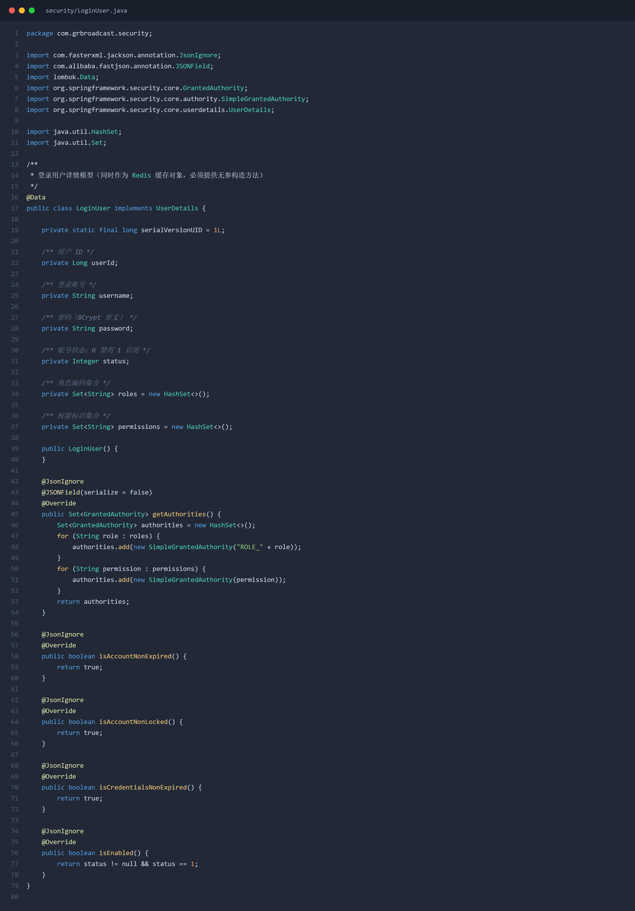
图6 LoginUser 用户详情模型
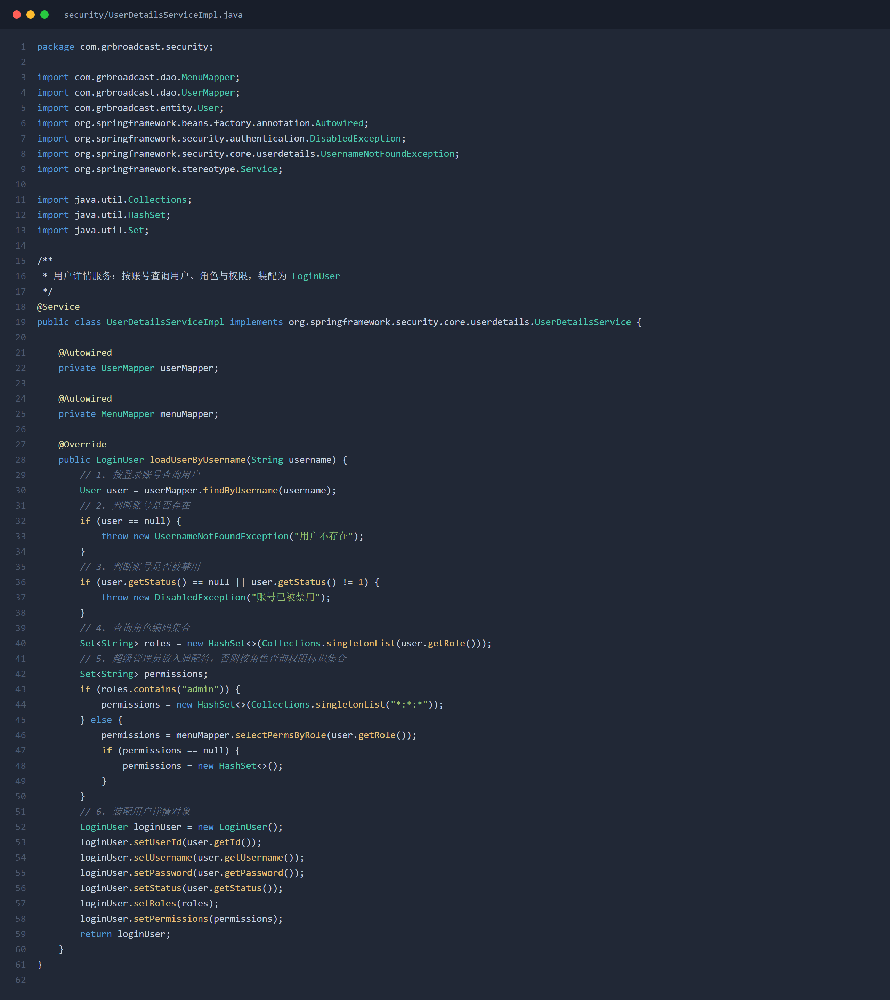
图7 UserDetailsServiceImpl 用户详情服务
步骤5：编写安全配置类
新建安全配置类，注册 SecurityFilterChain 类型的 Bean（Spring Security 5.7 起 WebSecurityConfigurerAdapter 已被弃用），并按表中逐项完成设置。
配置项 | 设置要求 | 说明 |
|---|---|---|
跨站请求伪造防护 | 关闭 | 前后端分离项目用令牌认证，不依赖会话 |
表单登录 | 关闭 | 不关闭时未认证请求会被重定向到登录页 |
HTTP 基础认证 | 关闭 | 同上，避免弹出浏览器原生登录框 |
方法级安全注解 | 开启 | 不开启时权限注解会静默失效，不报错也不警告 |
框架自带退出接口 | 关闭 | 自带接口行为固定，需自行实现退出逻辑 |
跨域配置 | 迁移到此处 | 由安全框架统一接管跨域 |
预检请求 | 放行 OPTIONS 方法 | 预检请求不携带令牌，拦截会导致跨域失败 |
白名单 | 放行登录、注册、健康检查、错误页转发路径 | 否则会出现「想登录但登录接口也被拦」 |
其余请求 | 要求已认证 | 白名单放行、其余全拦 |
密码编码器 | 注册 BCrypt | 认证过程中框架会自动调用 |
JWT 过滤器 | 注册并置于用户名密码认证过滤器之前 | 顺序错误会导致后续授权环节读不到身份 |
同时注册一个 AuthenticationManager 的 Bean 供登录接口调用。
版本适配说明：本工程实际使用 Spring Boot 2.7.14、Spring Security 5.7.10。与模板基于的 Spring Boot 3.2 / Security 6 相比，URL 拦截规则使用 antMatchers（requestMatchers 的部分重载自 5.8 起才提供）；方法级安全使用 @EnableGlobalMethodSecurity(prePostEnabled = true) 开启；Security 5.7 已提供 AuthorizationManager 授权 API，任务二的自定义权限管理器同样按此实现；AuthenticationManager 通过 @Bean 暴露供登录接口调用。
截图：（安全配置类）
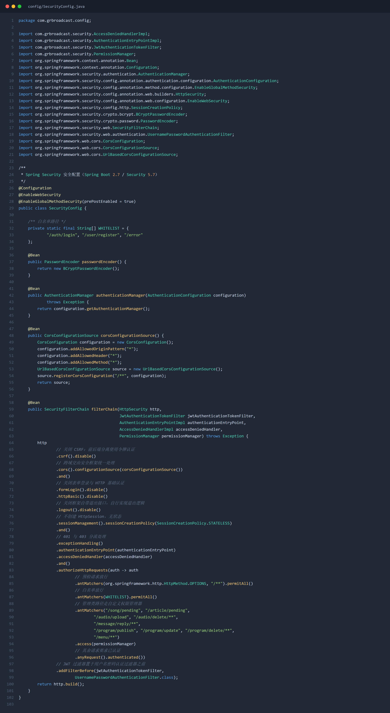
图8 SecurityConfig 安全配置类
步骤6：实现登录接口
新增登录控制器与登录业务类，业务方法按七步实现：
接收账号密码参数，做基本格式校验。
构造一个未认证的认证请求对象，把账号密码装进去。
调用认证管理器完成认证，框架会自动调用步骤 4 编写的用户详情服务。
从认证结果中取出用户详情对象，此时它已装配好角色与权限集合。
把用户详情对象以用户 ID 为键写入 Redis，过期时间与令牌有效期保持一致。
签发令牌，载荷中只放用户 ID。
组装响应：令牌字符串、有效期秒数，以及供前端使用的用户信息（账号、姓名、角色、权限标识列表）。
注意：认证失败时要统一转成「账号或密码错误」，不要分别提示「账号不存在」和「密码错误」，否则提示差异会被用来探测账号是否存在。
截图：（Apifox 调用登录接口，成功返回令牌）
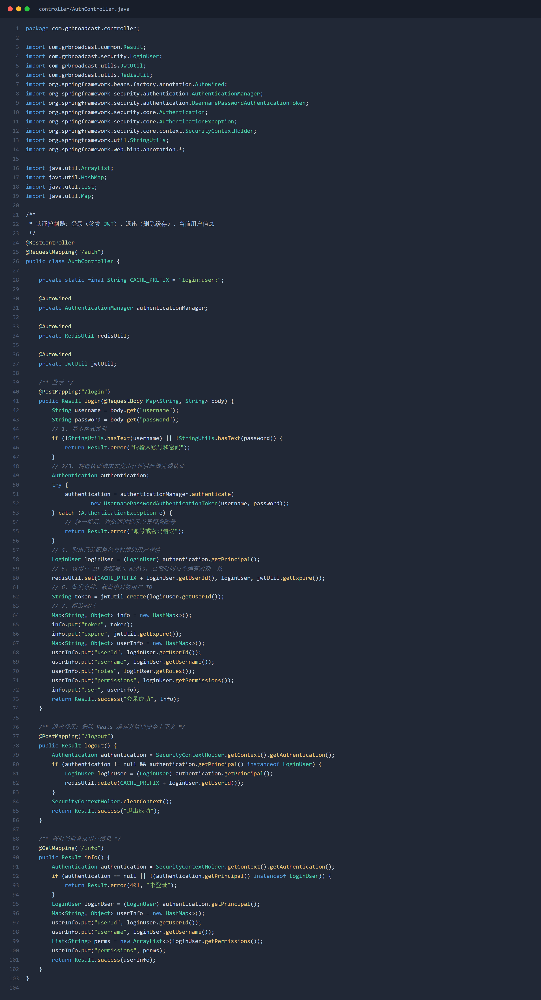
图9 AuthController 登录、当前用户与退出接口
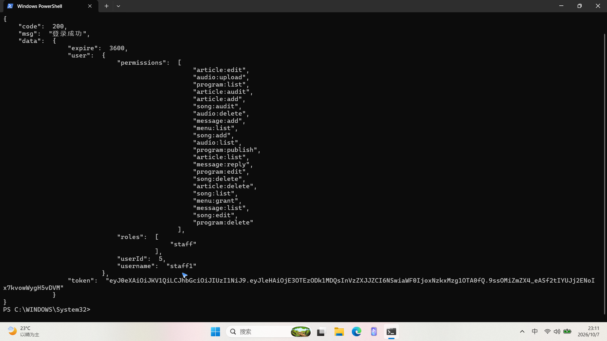
图10 调用登录接口成功返回令牌
步骤7：实现 JWT 认证过滤器
新建过滤器类继承 OncePerRequestFilter，重写 doFilterInternal 方法，按八步实现：从请求头取出令牌（兼容带前缀与不带前缀两种写法）、无令牌直接放行、校验令牌签名与有效期、解析出用户 ID、用该 ID 从 Redis 取回用户详情、缓存中不存在则放行、二次校验账号状态、构造已认证的认证对象写入安全上下文、放行请求。
两个关键点：第一，认证失败时不要自己抛异常，也不要自己写 401 响应，而应直接放行，由授权环节统一处理；第二，判断「本次请求是否已处理过」时不能只看认证对象是否为空，因为过滤器链前段的匿名身份过滤器已经放入了一个匿名认证对象，正确做法是显式排除匿名身份。
截图：（带令牌访问「当前用户信息」接口，成功返回）
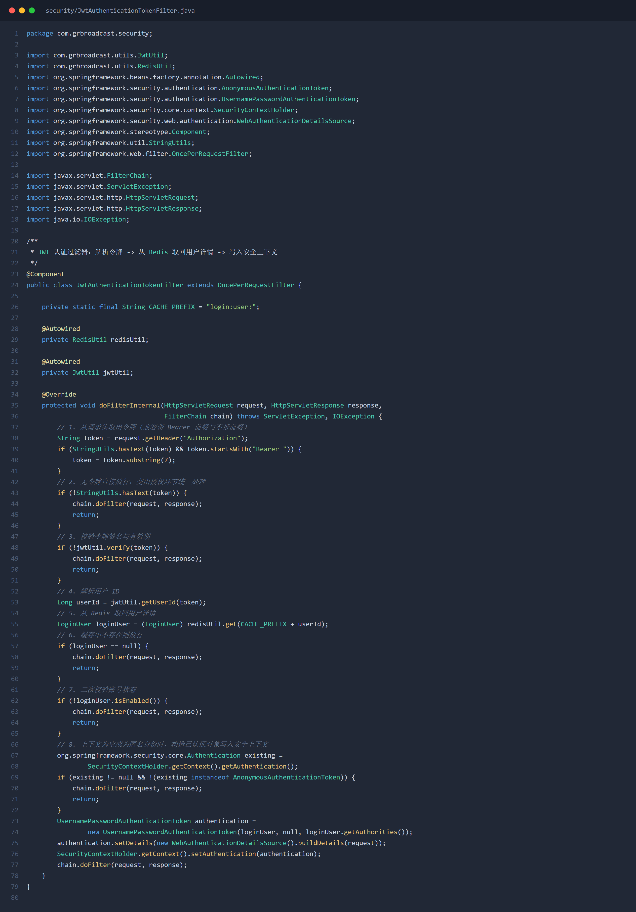
图11 JwtAuthenticationTokenFilter 认证过滤器
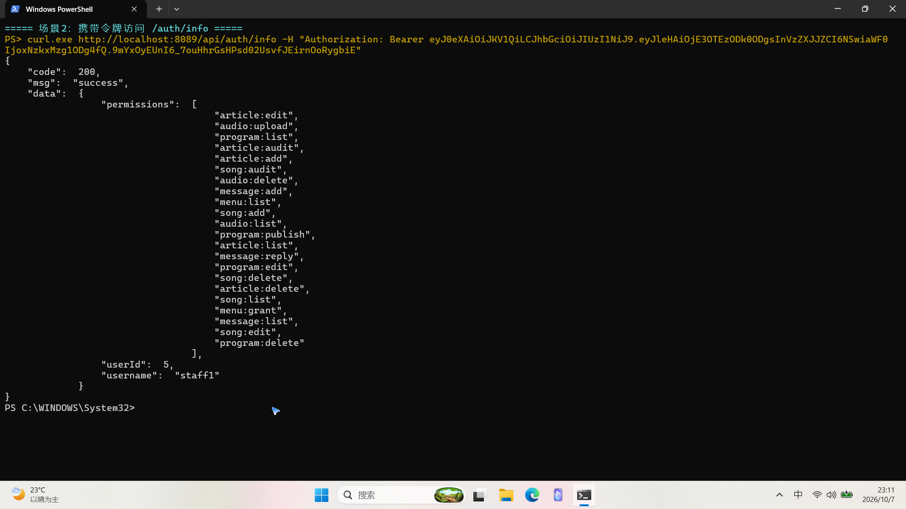
图12 携带令牌访问 /auth/info 成功返回
步骤8：实现退出登录
新增退出接口，按三步实现：从安全上下文取出当前已认证的用户信息、取出用户 ID 并按与登录时完全一致的规则拼出缓存键并删除、清空安全上下文后返回成功。
因为过滤器每次都从 Redis 取用户信息，所以缓存被删除后，该令牌即便签名有效、时间未到，也再取不到身份信息，等同于立即失效。
截图：（退出后用原令牌访问受保护接口，返回 401）
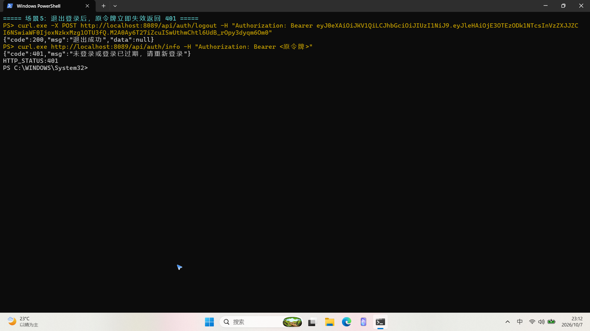
图13 退出登录后原令牌立即失效返回 401
步骤9：设计菜单表、菜单树与角色菜单授权
设计 menu 菜单表与 role_menu 角色菜单关联表。menu 表用 menu_type 字段区分目录 M、菜单 C、按钮 F 三类数据，权限标识按「模块:操作」命名，例如 song:audit、article:add；角色与菜单通过 role_menu 多对多关联。
菜单树采用两次遍历加映射表构建：第一次遍历把全部节点放入以菜单 ID 为键的映射表，第二次遍历为每个节点查找父节点并挂载、同时收集根节点。整体时间复杂度为 O(n)，既避免递归反复遍历列表，也避免层级过深时递归栈溢出。
角色菜单授权：角色列表接口返回各角色及其已选菜单；保存授权时在一个事务内先删除该角色的旧关联，再批量插入新关联，并自动补全所选菜单的父级目录，避免出现「能打开页面但上级目录不可见」。
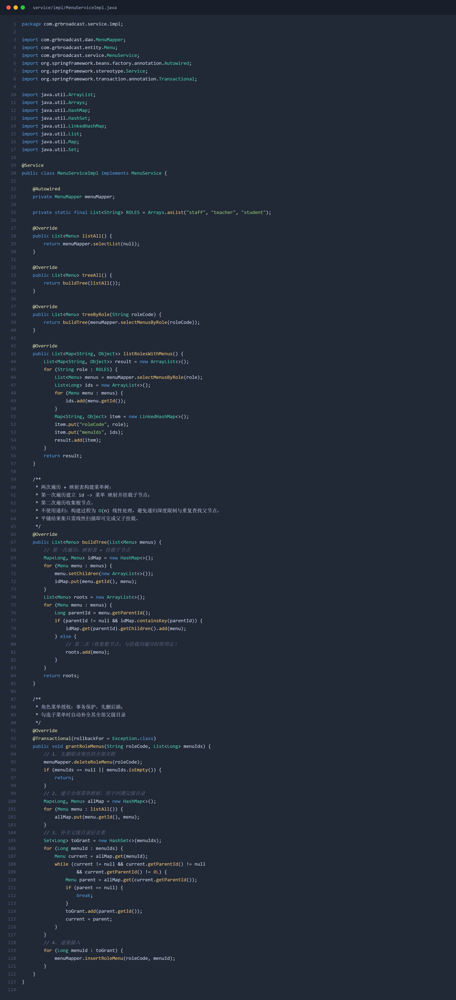
图14 MenuServiceImpl 菜单树构建与角色授权（先删后插、事务保护）
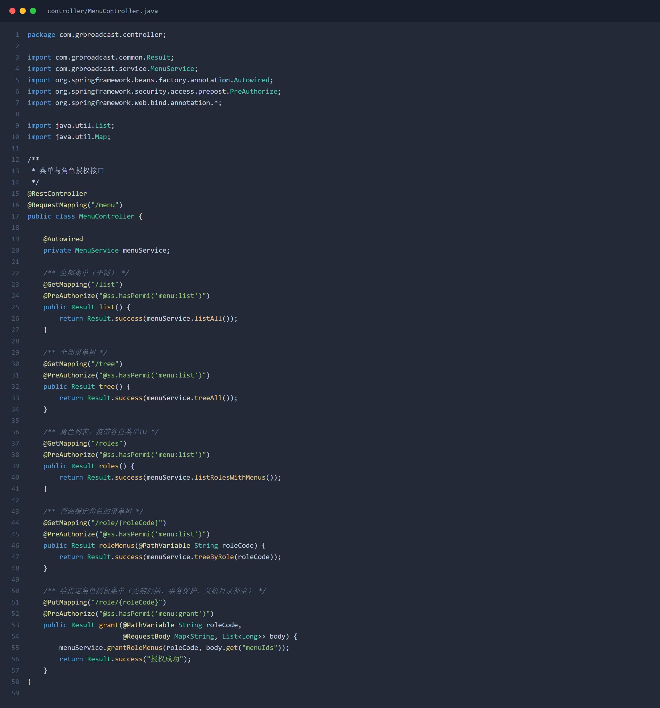
图15 MenuController 菜单与授权接口
任务二：实现授权拦截（401 与 403）
步骤1：实现权限判断服务
新建权限判断服务类，注册为名为 ss 的 Bean，对外提供四个方法：判断是否拥有指定权限、判断是否拥有任意权限、判断是否拥有指定角色、判断是否为超级管理员。
判断逻辑分三步：从安全上下文中取出当前登录用户，取不到或权限集合为空则直接返回不通过；权限集合中含有通配符则说明是超级管理员，直接返回通过；否则判断权限集合是否包含目标权限标识。
路径级授权与后面的方法注解必须共用这一处逻辑，否则规则演进时两处会不一致。
截图：（权限判断服务类）
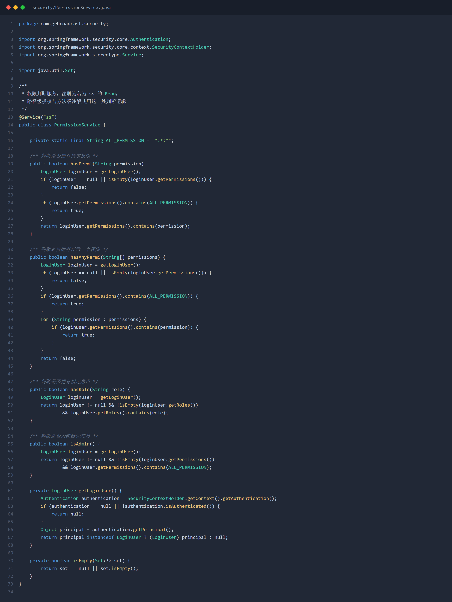
图16 PermissionService 权限判断服务（Bean 名 ss）
步骤2：实现自定义权限管理器
新建权限管理器类，实现 AuthorizationManager 接口，泛型参数取请求授权上下文，表示基于请求的授权判断。判断过程分四层：
从请求上下文取出请求对象，得到请求方法与请求路径，并取出当前认证信息。
若认证信息为空、未通过认证，或主体是匿名用户，返回拒绝。
若当前用户是超级管理员，直接返回通过，不再逐条比对权限。
根据请求方法与路径解析出该请求所需的权限标识；若该路径没有配置权限要求，返回通过；否则调用权限判断服务比对，命中返回通过，未命中返回拒绝并记录告警日志。
路径与权限的对应关系建议集中在一处常量或数据库中维护，便于审阅「哪些接口受保护」。
截图：（权限管理器类）
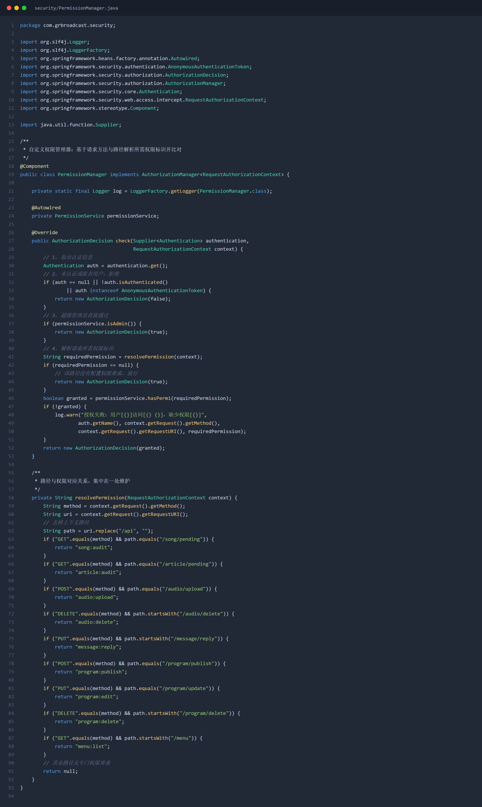
图17 PermissionManager 自定义权限管理器
步骤3：实现两个异常处理器
新建 handler 包，在其中创建两个处理器，均使用组件注解注册。
无权限异常处理器实现 AccessDeniedHandler 接口，重写 handle 方法：设置响应状态码为 403，设置响应内容类型与字符编码（避免中文乱码），把统一的失败响应对象序列化为 JSON 写入响应体。
认证异常处理器实现 AuthenticationEntryPoint 接口，重写 commence 方法：设置响应状态码为 401，其余处理同上。
两个对照关系如下。
对比项 | 认证异常处理器 | 无权限异常处理器 |
|---|---|---|
处理场景 | 未登录或凭证无效 | 已登录但权限不足 |
实现接口 | AuthenticationEntryPoint | AccessDeniedHandler |
重写方法 | commence | handle |
HTTP 状态码 | 401 | 403 |
两个处理器中都不要抛出异常，也不要继续调用过滤器链，否则响应会被重复写入。
截图：（无令牌访问受控接口返回 401；读者账号调用管理员接口返回 403）
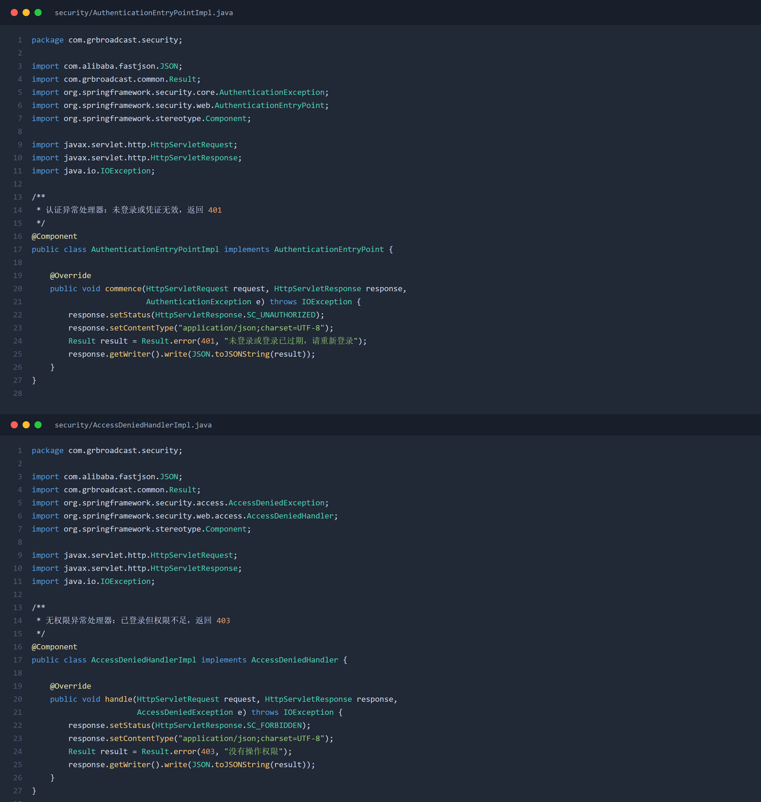
图18 401 与 403 两个异常处理器
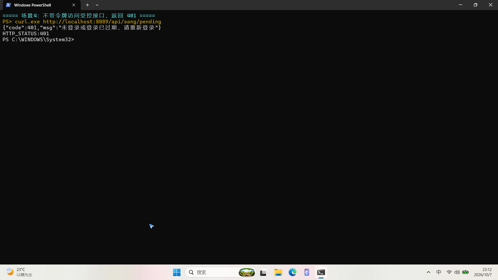
图19 无令牌访问受控接口返回 401
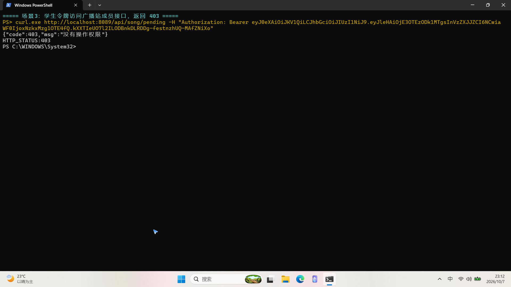
图20 学生账号调用广播站成员接口返回 403
步骤4：替换方法级权限注解
把原有 7 处「仅管理员」的判断逐一替换为具体权限注解。
原接口 | 原有判断 | 替换为 |
|---|---|---|
点歌模块接口 | 方法内 Session/角色判断 | song:list、song:add、song:audit、song:edit、song:delete |
投稿模块接口 | 方法内 Session/角色判断 | article:list、article:add、article:audit、article:edit、article:delete |
音频模块接口 | 登录即可访问 | audio:list、audio:upload、audio:delete |
留言模块接口 | 登录即可访问 | message:list、message:add、message:reply |
节目单模块接口 | 方法内角色判断 | program:list、program:publish、program:edit、program:delete |
菜单与授权接口 | 本次实验新增 | menu:list、menu:grant |
前置条件：安全配置类中必须已开启方法级安全注解，否则这些注解会静默失效，既不报错也不警告，现象是路径级拦截正常但注解完全不起作用。
截图：（替换后的控制器方法）
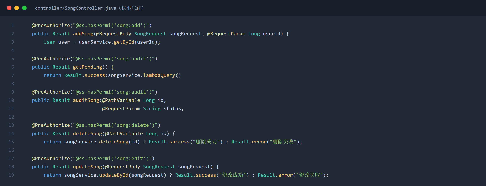
图21 SongController 方法级权限注解
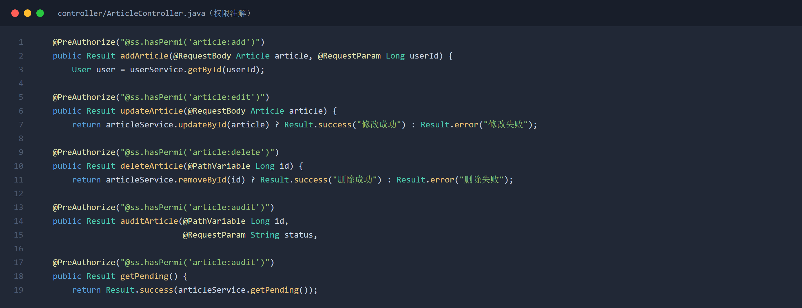
图22 ArticleController 方法级权限注解
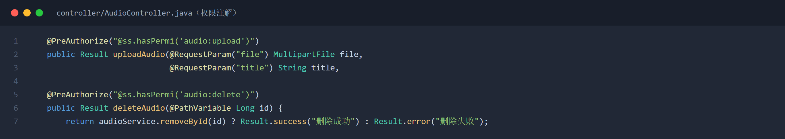
图23 AudioController 方法级权限注解
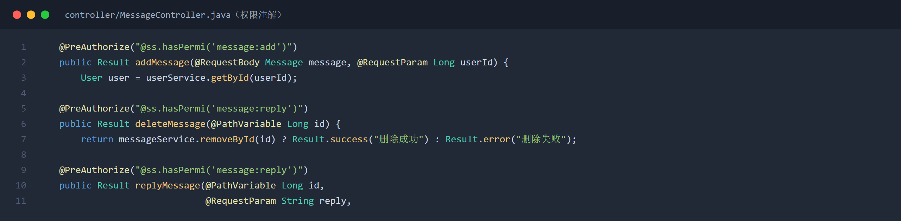
图24 MessageController 方法级权限注解
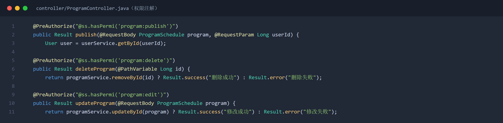
图25 ProgramController 方法级权限注解